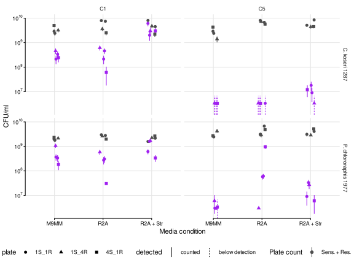
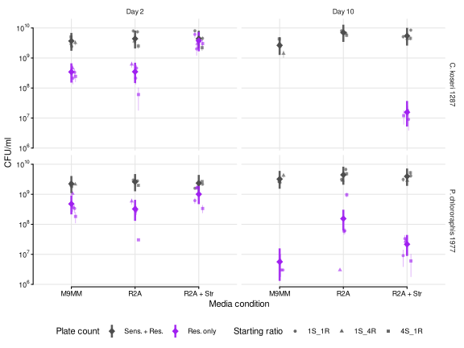
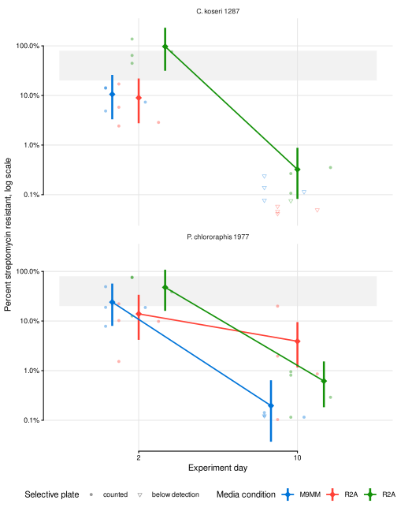

06.A Traditional competition assay
CFU-based competition outcomes between sensitive and resistant forms
1 Introduction
Strain naming convention: 1287 = Citrobacter koseri 1287, 1977 = Pseudomonas chlororaphis 1977, A = Ancestral/Streptomycin sensitive, E = Evolved/Streptomycin resistant.
Growth media convention: M9MM = 0.25X strength M9 minimal media with 10 mM glucose and Casamino acids. R2A = Reasoner’s 2 broth (a more complex, but still low-nutrient growth medium).
The ancestral (streptomycin sensitive) and evolved (streptomycin resistant) forms of each species were mixed and grown in 6 ml microcosm vials under a serial transfer regime: every 48 hours 6 μl of culture was transferred into 6 ml of fresh medium (1000 fold dilution) at 30°C with gentle shaking. Only same-species competitions were performed, so vials contains A1287 + E1287 or A1977 + E1977
Three media conditions were used,
| Condition | Medium | Streptomycin |
|---|---|---|
M9 |
0.25X strength M9MM | none |
R2A |
R2A broth | none |
R2A_10str / R2A_512str |
R2A broth | 10 μg/ml (1977), 512 μg/ml (1287) |
Each species × medium combination was inoculated at three nominal starting ratios of sensitive to resistant cells — 1A:1E (two replicate vials), 1A:4E and 4A:1E (one vial each). This was done to ensure that the outcome is insensitive to the starting density.
Populations were plated at two time points, after 2 days and after 10 days. Total density was measured by spreading 100 μl on plain PPY agar; resistant density was measured by spotting 30 μl on PPY agar containing 5000 μg/ml streptomycin.
After looking at plating CFUs for the Evo strains I suspect that resolution isn’t good enough with the 30 μl drop. The small drop size means that the number of colonies counted can often be too low to reliably estimate the true CFU count. Also colonies can merge into each other…
The fraction of the population that is streptomycin resistant is just the ratio of the two plate counts.
Colony forming units are estimated with the maximum likelihood estimators of
Martini KM, Boddu SS, Nemenman I, Vega NM. 2024. Maximum likelihood estimators for colony-forming units. Microbiol Spectr 12:e03946-23. https://doi.org/10.1128/spectrum.03946-23
which pool information across the whole dilution series and correct for colony crowding, rather than relying on a single countable plate value.
2 Setup
2.1 Libraries
2.2 Global variables
Show/hide code
data_raw <- here::here("data", "raw", "20260604_traditional_competition_cfu")
data_processed <- here::here("data", "processed", "06_traditional_competition")
data_interim <- here::here("data", "interim", "06_traditional_competition")
figs <- here::here("output", "figures")
# make output directories if they don't exist
fs::dir_create(data_processed)
fs::dir_create(data_interim)
fs::dir_create(figs)Estimator settings differ between the two plate formats because a 100 mm spread plate and a 30 μl drop spot hold very different numbers of colonies.
N is the Poisson cutoff — the count above which a plate is treated as too crowded to trust. NMLE is the number of resolvable colony positions, roughly the ratio of the plating area to the area of one colony, and is what the maximum likelihood estimator uses to correct for colonies landing on top of each other. sampling_vol converts the estimator output (CFU in the volume plated) to CFU/ml.
Show/hide code
plate_pars <- tibble::tribble(
~plating_condition , ~count_type , ~N , ~NMLE , ~sampling_vol ,
# 100 ul spread on a plain PPY 100 mm plate: everything that grew
"no_str" , "Sens. + Res." , 300 , 5000 , 0.100 ,
# 30 ul drop spot on PPY + 5000 ug/ml streptomycin: resistant only
"str" , "Res. only" , 100 , 500 , 0.030
)
# every column that identifies one plate count series
cfu_groups <- c(
"species",
"exp_treatment",
"exp_ratio",
"replicate",
"transfer_cycle",
"plating_condition",
"count_type",
"N",
"NMLE",
"sampling_vol"
)The 1000 fold transfer dilution means \(\mathrm{log_2(1000)} \approx 9.97\) generations elapse per 48 hour growth cycle. The first plating is from transfer_cycle=1 (i.e. day 2, 48 hours elapsed). The second plating is from transfer_cycle=5 (i.e., day 10, 240 hours elapsed).
Show/hide code
gen_per_cycle <- log2(1000)
# transfer_cycle
cycle_map <- tibble::tribble(
~transfer_cycle , ~day ,
1 , 2 ,
5 , 10
)
# nominal resistant fraction of the inoculum
start_frac <- c("1S_1R" = 0.5, "1S_4R" = 0.8, "4S_1R" = 0.2)
# media condition colors
treatcols <- c(
"M9MM" = "#0074D9",
"R2A" = "#FF4136",
"R2A + Str" = "#149109ff"
)
countcols <- c(
"Sens. + Res." = "grey30",
"Res. only" = "purple"
)2.3 Functions
Collapses the species specific streptomycin treatments (R2A_10str for 1977, R2A_512str for 1287) onto one label and orders the media conditions.
Show/hide code
label_treatment <- function(df) {
df |>
dplyr::mutate(
treatment = dplyr::case_when(
exp_treatment == "M9" ~ "M9MM",
exp_treatment == "R2A" ~ "R2A",
stringr::str_detect(exp_treatment, "str") ~ "R2A + Str"
)
) |>
dplyr::mutate(
treatment = factor(treatment, levels = names(treatcols)),
species_label = unname(sp_labels[species]),
# day is numeric, so facet strips need an explicitly ordered label
day_label = factor(paste("Day", day), levels = c("Day 2", "Day 10")),
cycle_label = factor(paste0("C", transfer_cycle), levels = c("C1", "C5"))
)
}Turns the detection flag into something a legend can print.
3 Read data
4 Format
Counts sit one column per dilution (colonycount_10-5, colonycount_10-6, colonycount_10-7). Pivoting them long gives the count / dilution pair the estimators expect, where dilution is the dilution fraction (e.g. 1e-6).
Empty cells are dilutions that were never counted, either because the plate was too crowded or because the spot was not read. They are dropped. A recorded 0 is a real observation of no colonies and is kept.
Show/hide code
cfu_long <- cfu_counts |>
mutate(species = as.character(species)) |>
pivot_longer(
cols = starts_with("colonycount_"),
names_to = "dilution",
values_to = "count"
) |>
mutate(
dilution = 10^as.numeric(str_remove(dilution, "colonycount_10"))
) |>
filter(!is.na(count)) |>
left_join(plate_pars, by = join_by(plating_condition))Not all dilutions are available for all treatments/samples. If a plate was uncountable or there were no CFUs then it is left blank.
5 Estimate CFU/ml
5.1 Detection limits
Some samples will lack a density estimate because we did not plate high enough dilutions (e.g., the focal strain was very low abundance). To gather some kind of baseline we set the detection limit to be one colony on the most concentrated spot. This is then flagged so that downstream results are interpreted as an upper bound and not an actual measurement.
5.2 Maximum likelihood estimates
Both estimators are computed for every count series. A recorded 0 stays in the series: both estimators divide the pooled colony count by the pooled dilution factor. Dropping it would inflate the estimate — for the 1977 R2A 1:4 vial at day 10, which read 0, 0 and 1 colonies across the three dilutions, by 111 fold. Only series that are empty at every dilution are held back, because find_MLE() has no root for them, and they are re-attached at their detection limit below.
Show/hide code
# guard: find_MLE() brackets its root on c(1, 1e9) and fails outside it
stopifnot(with(cfu_long, max(count / dilution)) < 1e9)
cfu_est <- cfu_long |>
filter(sum(count) > 0, .by = all_of(cfu_groups)) |>
nest(.by = all_of(cfu_groups)) |>
mutate(
est = pmap(
list(data, N, NMLE),
\(x, n, nmle) find_estimators(x$count, x$dilution, N = n, NMLE = nmle)
)
) |>
unnest(est) |>
# the estimators return CFU in the volume plated, not CFU/ml
mutate(
CFU_ml = r / sampling_vol,
CFU_ml_stdev = stdev / sampling_vol
) |>
select(-data, -r, -stdev)The crowding correction only matters when a plate is close to saturated, so the two estimators should agree closely here. They do — the ML estimate is at most a few percent above the Poisson cutoff estimate.
Show/hide code
Keep the ML estimates and put the undetected series back at their detection limit.
Show/hide code
cfu_ml <- cfu_est |>
filter(type == "ML_estimator") |>
right_join(cfu_detect, by = cfu_groups) |>
mutate(
CFU_ml = if_else(detected, CFU_ml, LOD),
# a non-detect carries an uncertainty as large as the value itself
CFU_ml_stdev = if_else(detected, CFU_ml_stdev, LOD),
type = if_else(detected, type, "detection_limit")
) |>
left_join(cycle_map, by = join_by(transfer_cycle)) |>
label_treatment()
readr::write_tsv(
cfu_ml,
here::here(data_processed, "cfu_ml_estimates.tsv")
)5.3 Population densities
Show/hide code
pdensity <- cfu_ml |>
mutate(
count_type = factor(count_type, levels = names(countcols)),
detected = label_detected(detected)
) |>
ggplot(aes(x = treatment, y = CFU_ml, color = count_type)) +
geom_linerange(
aes(
ymin = CFU_ml - CFU_ml_stdev,
ymax = CFU_ml + CFU_ml_stdev,
lty = detected,
group = interaction(treatment)
),
position = position_jitterdodge(jitter.width = 0.25, seed = 123)
#position = position_dodge(width = 0.6)
) +
geom_point(
aes(shape = exp_ratio, group = treatment),
size = 2,
position = position_jitterdodge(jitter.width = 0.25, seed = 123)
) +
facet_grid(species_label ~ cycle_label) +
scale_y_log10(labels = scales::label_log()) +
scale_color_manual(values = countcols) +
# scale_shape_manual(values = c("counted" = 16, "below detection" = 6)) +
labs(
y = "CFU/ml",
x = "Media condition",
color = "Plate count",
shape = "Selective plate"
) +
theme_mct()
# ggsave(
# here::here(figs, "traditional_competition_densities.svg"),
# plot = pdensity,
# device = "svg",
# width = 8,
# height = 6
# )
R2A + Str condition is 512 μg/ml for 1287 and 10 μg/ml for 1977.
Total density is \(1.4\)–\(8.5\times10^{9}\) CFU/ml everywhere and does not change appreciably between day 2 and day 10 or across media conditions, so every vial supported a dense population for the whole experiment. The resistant counts, in contrast, drop by one to three orders of magnitude between the two plating days in nearly every vial.
6 Pooled CFU/ml over starting ratios
The experiment used three nominal starting ratios (1S:1R, 1S:4R, 4S:1R) to check that the outcome is insensitive to starting density. To get a single CFU/ml per condition (species × treatment × day × plating condition) with properly propagated uncertainty, we fit a hierarchical Bayesian model:
- Level 1 (within vial): each vial’s MLE estimate \(\bar{x}_i\) carries a known standard error \(s_i\) from the maximum likelihood estimator, so \(\bar{x}_i \sim \text{Normal}(\mu_{r},\, s_i^2)\) where \(r\) indexes the starting ratio.
- Level 2 (between ratios): each inoculation ratio’s true mean is drawn from a shared distribution, \(\mu_{r} \sim \text{Normal}(\mu,\, \tau^2)\), where \(\mu\) is the global mean for that condition and \(\tau\) captures between-ratio heterogeneity.
- Priors: \(\mu \sim \text{Normal}(20, 5)\) on the log scale (weakly informative for CFU/ml \(\sim 10^{8}\)–\(10^{9}\)), \(\tau \sim \text{half-Cauchy}(0, 1)\).
The model is fit on the log scale because CFU/ml spans three orders of magnitude. The standard error is propagated to the log scale via the delta method: \(\text{SE}(\log x) \approx \text{SE}(x) / x\). The posterior of \(\mu\) is back-transformed with \(\exp()\) for reporting on the CFU/ml scale.
Vials where no colonies grew at any dilution (below detection) are excluded: their CFU/ml is an upper bound, not a measurement. Two conditions — 1287 on selective plates at day 10 in both M9MM and R2A — have zero detected vials and so have no pooled estimate.
Show/hide code
priors <- c(
prior(normal(20, 5), class = "b"),
prior(cauchy(0, 1), class = "sd")
)
fit_cfu <- brm(
log_cfU | se(log_cfU_sd) ~ 0 + cond_id + (1 | exp_ratio:cond_id),
data = cfu_model,
family = gaussian(),
prior = priors,
sample_prior = "yes",
chains = 4,
cores = 4,
iter = 4000,
warmup = 1000,
control = list(adapt_delta = 0.95, max_treedepth = 12),
seed = 123,
backend = "rstan",
file = path(data_interim, "cfu_hierarchical_fit"),
file_refit = "on_change"
)The between-ratio standard deviation on the log scale is:
Show/hide code
fixef_summary <- fixef(fit_cfu)
ranef_summary <- VarCorr(fit_cfu)
# tau (between-ratio SD) on log scale
tau_est <- ranef_summary$`exp_ratio:cond_id`$sd["Intercept", "Estimate"]
tau_lower <- ranef_summary$`exp_ratio:cond_id`$sd["Intercept", "Q2.5"]
tau_upper <- ranef_summary$`exp_ratio:cond_id`$sd["Intercept", "Q97.5"]
cat(sprintf(
"tau = %.3f [%.3f, %.3f] on log scale (≈ %.1fx [%.1fx, %.1fx] on CFU/ml scale)\n",
tau_est,
tau_lower,
tau_upper,
exp(tau_est),
exp(tau_lower),
exp(tau_upper)
))tau = 0.574 [0.427, 0.770] on log scale (≈ 1.8x [1.5x, 2.2x] on CFU/ml scale)Extract the posterior of each condition’s global mean and back-transform to CFU/ml. For comparison, the analytical inverse-variance weighted (IVW) mean — the fixed-effects limit where \(\tau \to 0\) — is shown alongside.
Show/hide code
post <- as_draws_df(fit_cfu)
cond_cols <- grep("^b_cond_id", names(post), value = TRUE)
global_summary <- post |>
as_tibble() |>
select(all_of(cond_cols)) |>
mutate(across(everything(), exp)) |>
pivot_longer(
everything(),
names_to = "cond_raw",
values_to = "CFU_ml_post"
) |>
mutate(
cond_id = str_remove(cond_raw, "^b_cond_id"),
cond_id = str_replace(cond_id, "R2APStr", "R2A + Str")
) |>
separate(
cond_id,
into = c("species", "treatment", "day", "plating_condition"),
sep = "_",
extra = "merge"
) |>
mutate(day = as.numeric(day)) |>
summarise(
CFU_ml_global = mean(CFU_ml_post),
CFU_ml_lower = quantile(CFU_ml_post, 0.025),
CFU_ml_upper = quantile(CFU_ml_post, 0.975),
.by = c(species, treatment, day, plating_condition)
) |>
mutate(treatment = factor(treatment, levels = names(treatcols))) |>
arrange(species, treatment, day, plating_condition)
# Analytical IVW (fixed-effects) for comparison
ivw_summary <- cfu_ml |>
filter(detected) |>
mutate(
log_cfU = log(CFU_ml),
log_cfU_se = CFU_ml_stdev / CFU_ml
) |>
summarise(
log_mean = sum(log_cfU / log_cfU_se^2) / sum(1 / log_cfU_se^2),
log_se = sqrt(1 / sum(1 / log_cfU_se^2)),
.by = c(species, treatment, day, plating_condition)
) |>
mutate(
CFU_ml_ivw = exp(log_mean),
treatment = factor(treatment, levels = names(treatcols))
) |>
select(species, treatment, day, plating_condition, CFU_ml_ivw)
global_summary |>
left_join(
ivw_summary,
by = c("species", "treatment", "day", "plating_condition")
) |>
mutate(
across(c(CFU_ml_global, CFU_ml_lower, CFU_ml_upper, CFU_ml_ivw), \(x) {
format(x, scientific = TRUE, digits = 3)
})
) |>
select(
species,
treatment,
day,
plating_condition,
CFU_ml_global,
CFU_ml_lower,
CFU_ml_upper,
CFU_ml_ivw
)
7 Resistant fraction
The fraction of the population that is streptomycin resistant is the ratio of the two plate counts: \(f_\text{res} = \text{CFU/ml}_\text{str} / \text{CFU/ml}_\text{no\_str}\). Rather than propagating the per-vial standard errors through the ratio with the errors package, we use the joint posterior draws from the hierarchical model above. For each posterior sample \(s\), we compute:
\[f_\text{res}^{(s)} = \frac{\exp\!\bigl(\mu_\text{str}^{(s)}\bigr)}{\exp\!\bigl(\mu_\text{no\_str}^{(s)}\bigr)} = \exp\!\bigl(\mu_\text{str}^{(s)} - \mu_\text{no\_str}^{(s)}\bigr)\]
where \(\mu_\text{str}\) and \(\mu_\text{no\_str}\) are the condition-level global means (on the log scale) from the same posterior draw. This propagates both the within-vial measurement uncertainty and the between-ratio variation through the ratio in a single step, preserving the full posterior distribution — including any asymmetry — rather than relying on a normal approximation.
Two conditions (1287 selective plates at day 10 in M9MM and R2A) have no posterior for the resistant count because all vials were below detection; their resistant fraction is not estimated.
Show/hide code
# Pair posterior draws for no_str and str, compute f_evo per draw
cond_lookup <- tibble(
col_name = cond_cols,
cond_id = str_remove(cond_cols, "^b_cond_id") |>
str_replace("R2APStr", "R2A + Str")
) |>
separate(
cond_id,
into = c("species", "treatment", "day", "plating_condition"),
sep = "_",
extra = "merge"
) |>
mutate(day = as.numeric(day))
f_evo_post <- post |>
as_tibble() |>
select(all_of(cond_cols)) |>
mutate(.draw = row_number()) |>
pivot_longer(
all_of(cond_cols),
names_to = "col_name",
values_to = "log_cfU"
) |>
left_join(cond_lookup, by = "col_name") |>
pivot_wider(
id_cols = c(.draw, species, treatment, day),
names_from = plating_condition,
values_from = log_cfU
) |>
filter(!is.na(str)) |>
mutate(f_evo = exp(str - no_str))
# Posterior summary: mean and 95% credible interval
resistant_fraction <- f_evo_post |>
summarise(
f_evo_mean = mean(f_evo),
f_evo_lower = quantile(f_evo, 0.025),
f_evo_upper = quantile(f_evo, 0.975),
.by = c(species, treatment, day)
) |>
mutate(treatment = factor(treatment, levels = names(treatcols))) |>
arrange(species, treatment, day)
# Per-vial point estimates for plot context (simple ratio, no error propagation)
vial_f_evo <- cfu_ml |>
select(
species,
species_label,
treatment,
exp_ratio,
replicate,
day,
day_label,
plating_condition,
CFU_ml,
detected,
LOD
) |>
pivot_wider(
names_from = plating_condition,
values_from = c(CFU_ml, detected, LOD)
) |>
mutate(
f_evo = CFU_ml_str / CFU_ml_no_str,
detected_str = label_detected(detected_str)
)
readr::write_tsv(
resistant_fraction,
here::here(data_processed, "resistant_fraction.tsv")
)Show/hide code
Show/hide code
# Shaded band for the starting-fraction range (0.2–0.8)
start_band <- tibble(ymin = min(start_frac), ymax = max(start_frac))
f_evo_plot <- resistant_fraction |>
mutate(species_label = unname(sp_labels[species]))
pfraction <- ggplot() +
geom_rect(
data = start_band,
aes(xmin = 0.5, xmax = 2.5, ymin = ymin, ymax = ymax),
fill = "grey90",
alpha = 0.5,
inherit.aes = FALSE
) +
# Individual vials (faint, for context)
geom_point(
data = vial_f_evo,
aes(
x = factor(day),
y = f_evo,
color = treatment,
shape = detected_str,
group = interaction(treatment, replicate)
),
position = position_dodge(width = 0.5),
size = 1.5,
alpha = 0.4
) +
# Posterior mean with 95% credible interval
geom_linerange(
data = f_evo_plot,
aes(
x = factor(day),
ymin = f_evo_lower,
ymax = f_evo_upper,
color = treatment
),
position = position_dodge(width = 0.5),
linewidth = 1.2
) +
geom_point(
data = f_evo_plot,
aes(
x = factor(day),
y = f_evo_mean,
color = treatment,
group = treatment
),
position = position_dodge(width = 0.5),
shape = 18,
size = 3.5
) +
geom_line(
data = f_evo_plot,
aes(
x = factor(day),
y = f_evo_mean,
color = treatment,
group = treatment
),
position = position_dodge(width = 0.5),
linewidth = 0.8
) +
facet_wrap(~species_label, ncol = 1) +
scale_y_log10(
labels = scales::percent,
breaks = c(0.001, 0.01, 0.1, 1)
) +
scale_color_manual(values = treatcols) +
scale_shape_manual(values = c("counted" = 16, "below detection" = 6)) +
labs(
y = "Percent streptomycin resistant, log scale",
x = "Experiment day",
color = "Media condition",
shape = "Selective plate"
) +
theme_mct()
ggsave(
here::here(figs, "traditional_competition_resistant_fraction.svg"),
plot = pfraction,
device = "svg",
width = 7,
height = 6
)
At day 2 the posterior pooled estimates are coherent. In both drug-free media the resistant form has already fallen well below the starting-fraction band — 9–11% for 1287 and 14–24% for 1977 against nominal starting values of 20–80% — which is the signature of a substantial cost of streptomycin resistance. In the streptomycin vials the ordering reverses: the resistant form is 99% of the 1287 population and 48% of the 1977 population.
At day 10 that structure is gone. Every condition with a posterior estimate reads below 4% resistant regardless of species, medium or starting ratio, including the streptomycin vials. The two missing conditions (1287 in M9MM and R2A) had no detectable resistant cells at all. A uniform floor that ignores the treatment is not a competitive outcome, and it is quantified next.